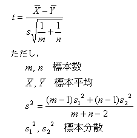

この例は，ふたつの工場で製造された製品からサンプルを抜き取って，C成分の重さを計測したものである。これらの平均値が等しいかどうかを有意水準 0.05 で検定する。この場合は，等しいか否かを判断するので，両側検定になる。
帰無仮説 ： 2つの工場の製品に含まれるC成分の重さの平均値は等しい。
対立仮説 ： 2つの工場の製品に含まれるC成分の重さの平均値は等しくない。
ふたつの標本が等分散か否かによって t 検定の方法が異なるので，F 検定を用いてまずこれを調べる。
分散が等しいふたつの母集団から取ったふたつの標本の分散 V1, V2 の比 V1/V2 は，F 分布に従うことが知られている。サンプルデータからVAR 関数でそれぞれの分散を求め，その比を計算すると 0.854750 となる。
一方 F 分布の左側限界点 F.INV(0.025,9,9)，つまりその値よりも左側にある確率が0.0.25である点は 0.248386 である。このことからF 値は信頼区間にあることが判り，等分散と仮定してよい。
この他に，関数 FTEST や F.DIST を使う方法もある。２つの標本に対して FTEST を適用すると値は，0.81897 という値を返す。これは分散比が F 分布の両側何% の位置にあるかを示している。よってこの関数値が 0.05 より大きいことから，等分散を仮定しても良い。
先の結果より，等分散を仮定して検定を行う。等分散のとき

は自由度 m+n-2 の t 分布に従うことが知られている。
今回のデータに対してこの値を計算すると 1.87002 となる。これは t 両側境界値 T.INV.2T(0.05,18) の値 2.10092 よりも小さいので，帰無仮説は棄却されない。つまり，この2つの平均値は等しいと言ってよい。（正確には，等しくないとは言えない。）
Excel2010では、関数 T.INV は片側確率の境界値を返すことに注意。両側境界値を求めたいときには、この関数T.INV.2Tを使用する。
TTEST 関数で両側確率 TTEST(B4:B13,C4:C13,2,2) を計算しても良い。この値（確率） 0.07784 が 0.05 より大きいことから同様の結論が導かれる。
上記のように数式を直接入力する他に，分析ツールを使っても平均値の差の検定ができる。
ここまでの計算の結果である。
これらのシートを比較すれば分るように，結果は同じになるが，分析ツールは処理の中身が隠されているので分かりにくい。意味を理解するためには，出来るだけ関数を書くことを薦める。
{kind=link}
{kind=link}